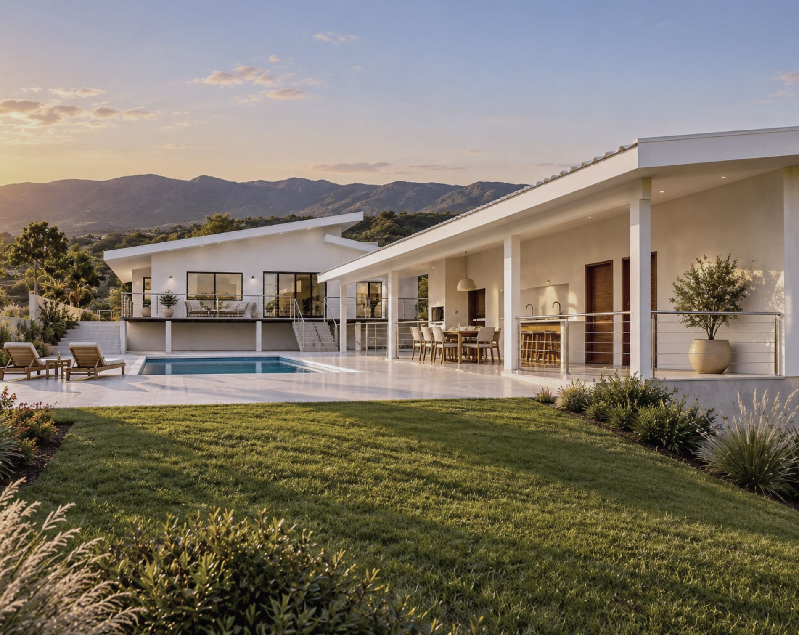
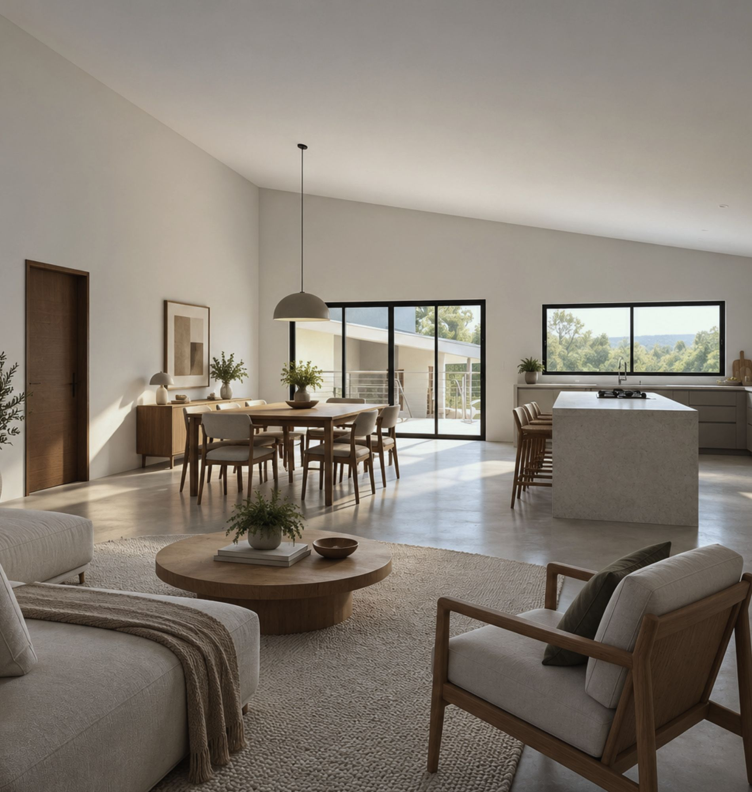
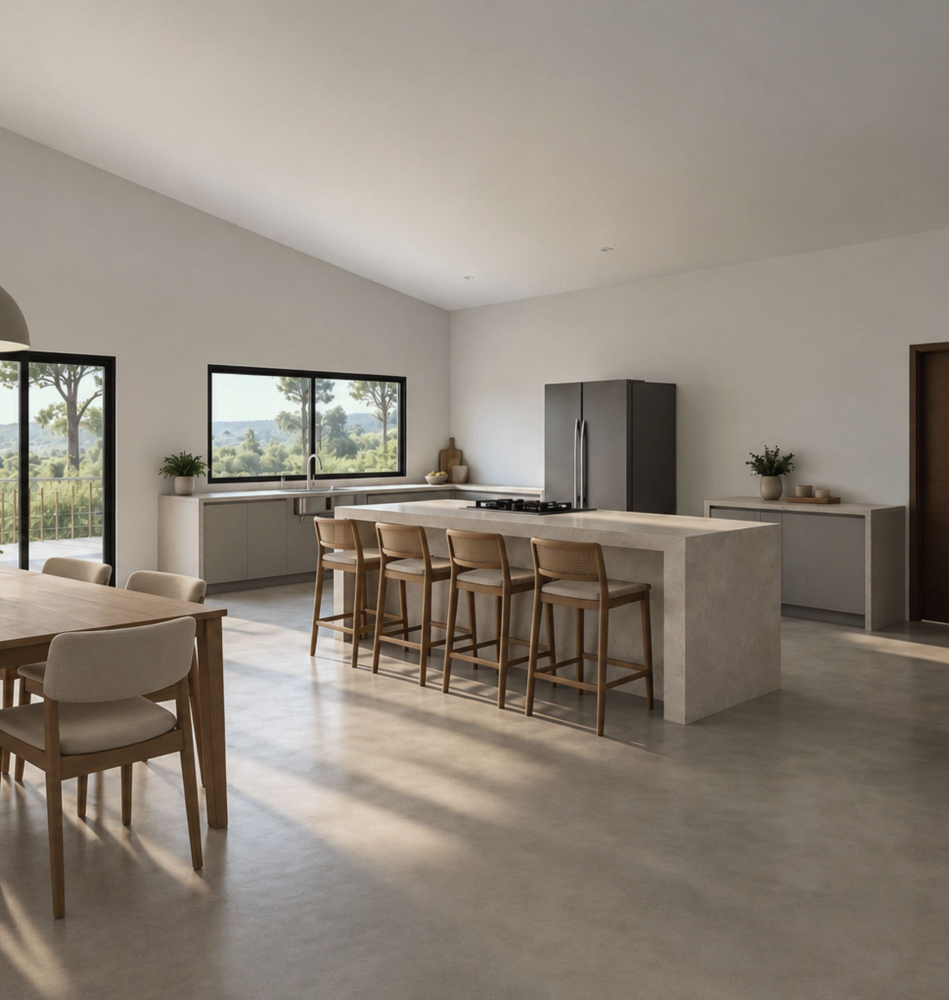
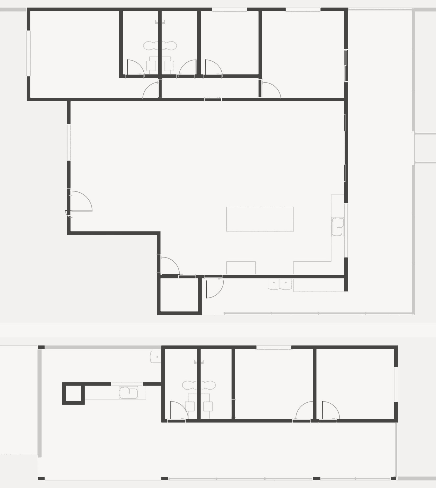
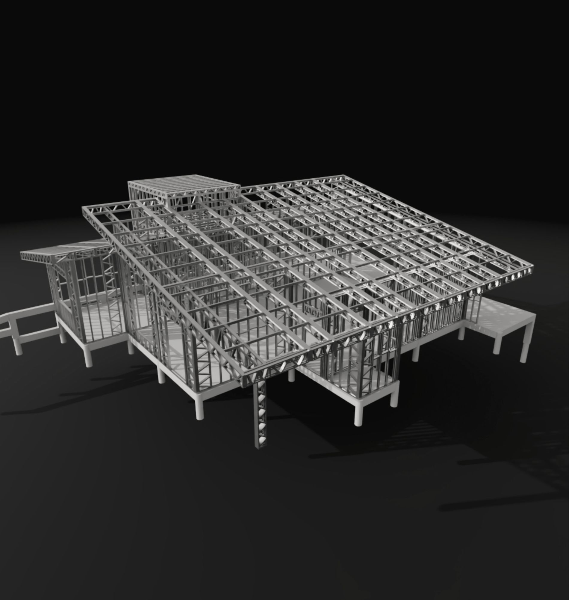
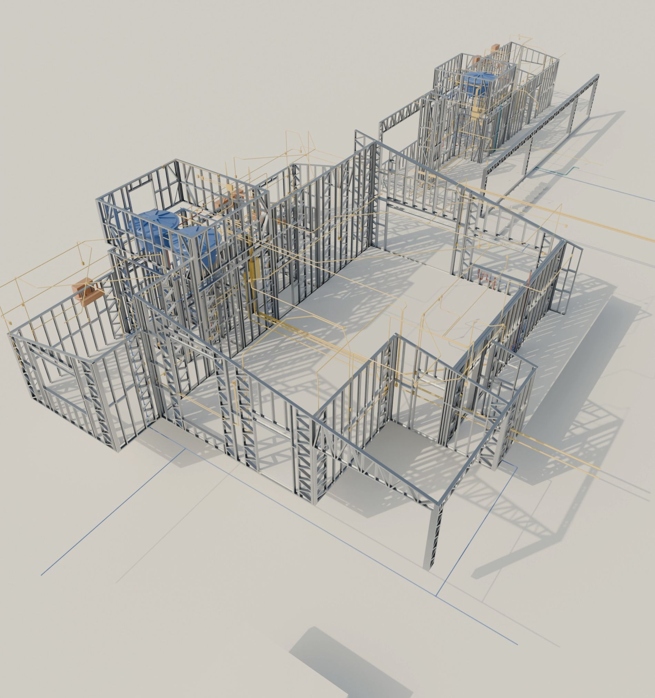
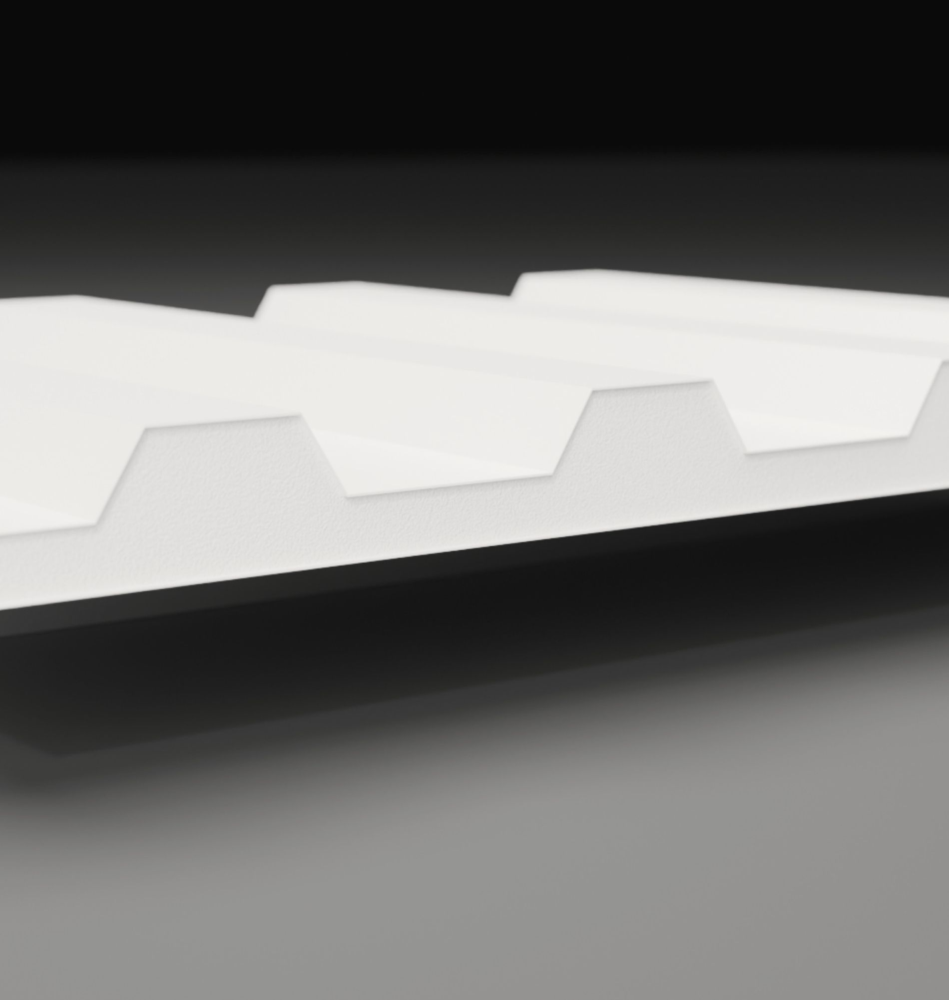

obras / casas
Casa Taquaraçu

Casa e edícula em steel frame numa encosta da serra mineira.
A edícula fica 1,35 m abaixo da casa. A varanda avança sobre o desnível e, entre os dois blocos, uma piscina de 27 m² ocupa o terraço.
Por dentro, estar, jantar e cozinha formam um só ambiente de 86,90 m² sob a inclinação do telhado, coberto com telha sanduíche.
O trabalho foi o projeto executivo, os complementares e a compatibilização de tudo com a estrutura: 11 modelos conversando entre si antes de a obra começar.
- Local
- Taquaraçu de Minas · MG
- Área construída
- 296,35 m²
- Casa e edícula
- 198,72 m² + 97,63 m²
- Terreno
- 1.463 m²
- Sistema
- Light steel frame
- Fundação
- Radier sobre pilares
- Cobertura
- Telha sanduíche, aço pré-pintado e núcleo de PU
- Complementares
- Elétrico, hidrossanitário, pluvial, piscina e ar-condicionado
- Escopo
- Projeto executivo, complementares e compatibilização
- Etapa
- Projeto
Fachadas



Interiores




Planta


Estrutura






